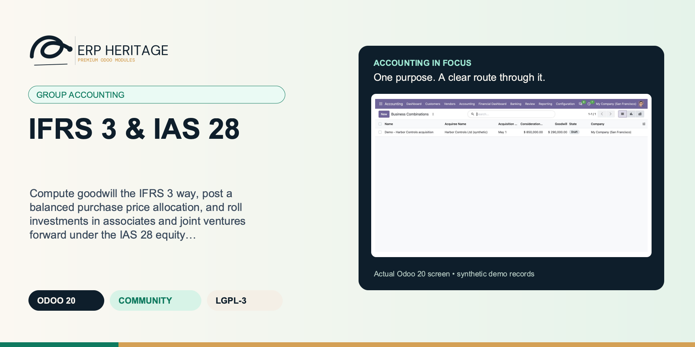
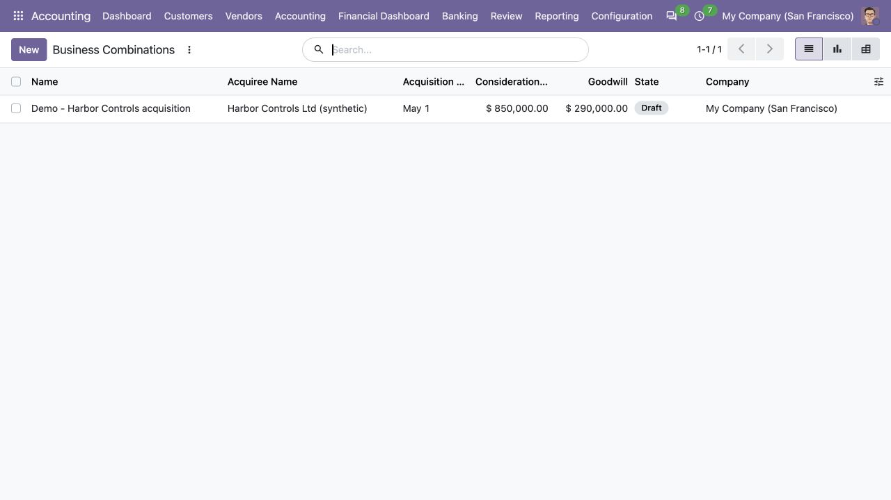
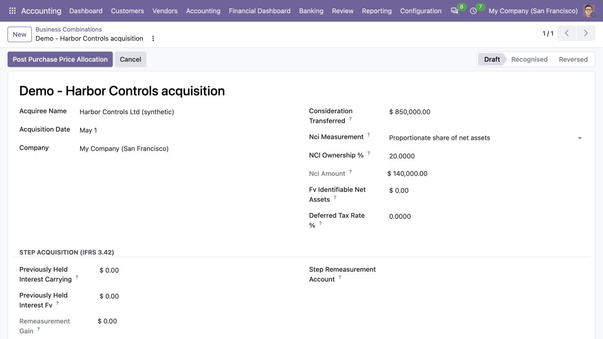
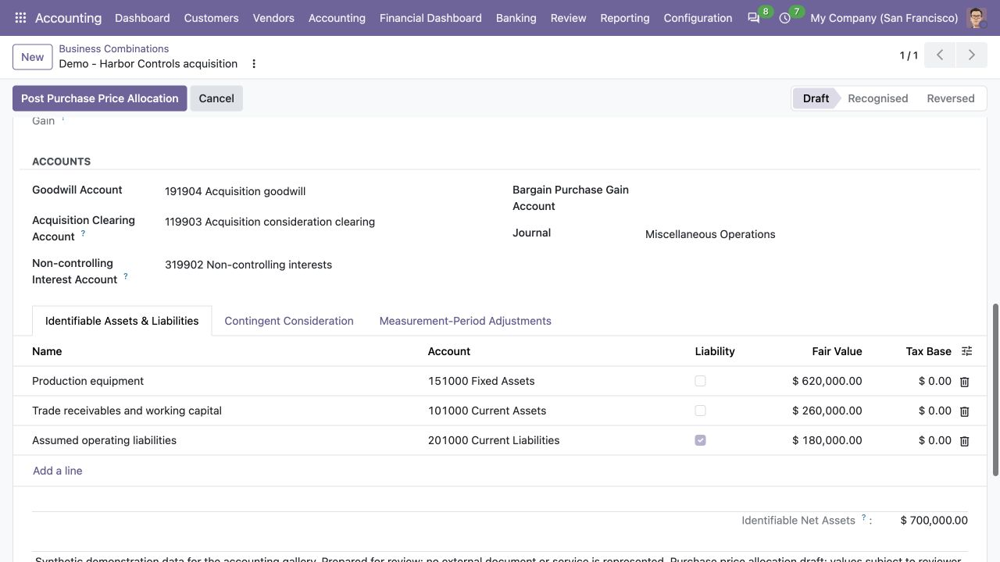
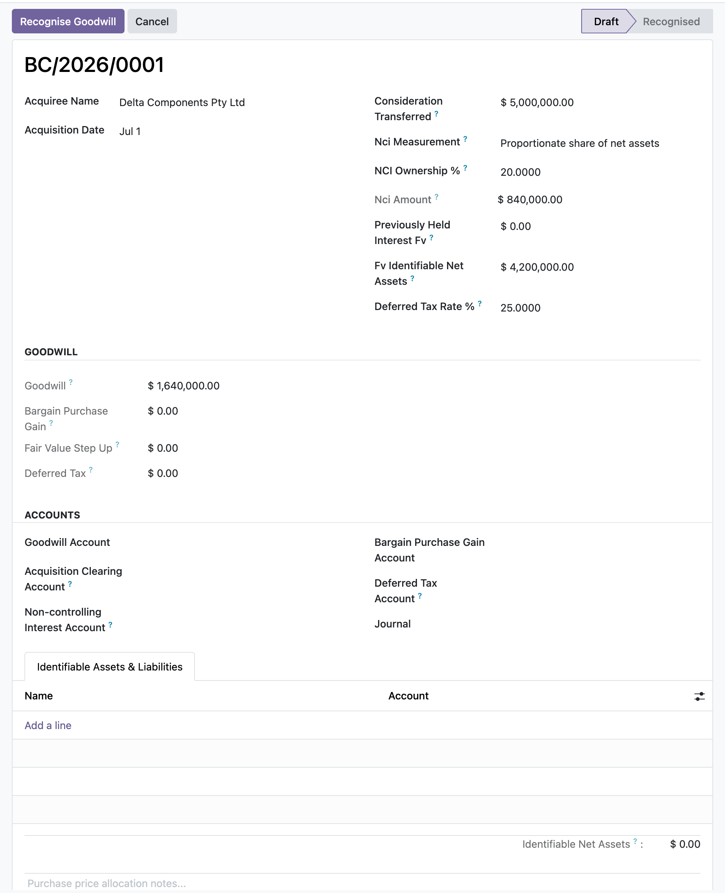

ERP HERITAGE / ODOO 20 COMMUNITY
Compute goodwill the IFRS 3 way, post a balanced purchase price allocation, and roll investments in associates and joint ventures forward under the IAS 28 equity method, all inside Odoo 20 Community.
LGPL-3 · Odoo 20 · v20.0.1.2.0 · Module guide, setup, workflows and rollout checks
The purpose
This module adds two IFRS mechanics a plain ledger does not carry. On the IFRS 3 side it computes goodwill as consideration transferred (including the acquisition-date fair value of contingent consideration) plus non-controlling interest plus any previously-held interest less the fair value of identifiable net assets acquired, recognises a bargain purchase gain when that arithmetic is negative, and posts a full purchase price allocation that keeps consideration, non-controlling interest and previously-held interest distinct. The simple goodwill path is restricted to acquisitions without NCI or a previously-held interest. Step acquisitions remeasure the previously-held interest to fair value with the gain or loss posted to profit or loss. Measurement-period adjustments track acquisition-date retrospective effect, information-known date and exact accounting date separately; they can post auditable IFRS 3.49(b) depreciation/amortisation catch-up to current profit or loss or an approved comparative equity account. Liability-classified contingent consideration is remeasured to fair value through profit or loss in chronological order, while equity-classified contingent consideration is never remeasured. On the IAS 28 side an investment can be posted at cost or adopted from an exact posted opening entry without duplicating cash. It rolls forward for profit or loss, dividends and impairment, supports proportional disposal while the equity method continues, and on cessation recognises retained-interest fair value plus signed OCI/CTA recycling. Posting actions are manager-gated, entries are sealed, and disposal memorandum fields preserve carrying amount, proceeds, retained fair value, OCI and closed unrecognised losses.
Inside Odoo 20
Captured from Odoo 20 Community using synthetic demonstration records. Configuration screens show the available workflow; external service connectivity still requires the relevant provider setup and validation.

Draft acquisition register summarizes consideration and calculated goodwill.
Captured 2026-09-22 from isolated Odoo 20 Community database with synthetic demonstration records. No external submission or live banking activity is represented.

Draft acquisition assessment records consideration and proportionate non-controlling interests.
Captured 2026-09-22 from isolated Odoo 20 Community database with synthetic demonstration records. No external submission or live banking activity is represented.

Draft purchase price allocation lists identifiable assets and assumed liabilities with recognition accounts.
Captured 2026-09-22 from isolated Odoo 20 Community database with synthetic demonstration records. No external submission or live banking activity is represented.
Inside this module
Enter consideration, non-controlling interest, any previously-held interest, and the fair value of net assets, and the goodwill is the standard's arithmetic. A negative result flips automatically to a bargain purchase gain recognised in profit or loss.
List identifiable assets and liabilities at fair value on lines and post a single balanced move that debits each asset, credits each liability, raises deferred tax on the step-up, books goodwill, and credits consideration and non-controlling interest.
Carry an associate or joint venture at cost, then pick up your share of profit, record dividends as a reduction not income, impair, and dispose, each as its own balanced entry that updates the carrying amount and the cumulative totals.
When your share of an associate's loss would take the carrying amount below zero, only the loss that brings it to nil is recognised and it is floored there, rather than driving the investment negative.
A dividend from an associate is posted as a reduction of the carrying amount, not as income, which is what the equity method requires and what a naive receipt entry gets wrong.
Deferred tax on the fair-value step-up feeds back into goodwill: a taxable difference raises a deferred tax liability and increases goodwill, a deductible one lowers it, so the goodwill and the allocation entry stay consistent.
Once a combination is recognised its consideration, non-controlling interest, dates, accounts, and asset lines are locked, and its identifiable asset lines cannot be changed or deleted, so a posted acquisition cannot be retro-edited.
A missing goodwill, gain, investment, share-of-profit, cash, impairment, or disposal account, a missing journal, or an invalid state each raises a clear message instead of posting a broken or unbalanced entry.
From input to outcome
Assemble the acquisition-date evidence and enter the supported purchase-price allocation inputs. Gather consideration, identifiable net assets, non-controlling interest, acquisition dates and associate movement inputs. Use a representative case with a known expected result so the team can separate configuration decisions from unexpected behaviour. Keep the supporting commercial or accounting evidence available during review.
Review goodwill or bargain-purchase arithmetic and the balanced acquisition posting before authorisation. Follow the record’s available actions in the order intended by the workflow. Review the selected company, relevant dates and any validation messages before continuing. If the source data changes, reassess the result against the updated evidence.
An acquisition closes. You enter consideration, non-controlling interest and each identifiable asset or liability at fair value with its tax base. The goodwill, fair-value step-up and deferred tax compute as you type. An Accounting Manager posts one balanced purchase price allocation with each IFRS 3 component on distinct lines, and the configuration becomes read-only. New acquisition-date information records its information date, retrospective effective date and exact journal date separately, including depreciation or amortisation catch-up to current profit or loss or an approved comparative reserve. For an associate already on the ledger, you can adopt its exact posted recognition entry without creating a second cash credit. Later, partial disposals roll ownership and carrying amount forward; loss of influence derecognises the equity-method balance, measures any retained interest at fair value and recycles signed OCI or CTA with a permanent memorandum trail.
Track supported measurement-period adjustments, contingent-consideration changes or associate movements with their distinct dates. Compare the outcome with the expected treatment for this case and record the reason for any difference that requires follow-up. Give exceptions an owner so they do not disappear inside a period-end spreadsheet.
Keep deal valuation and control or influence assessments with the transaction file; this module records their accounting consequences rather than negotiating the deal. Include the accepted operating example, configuration choices and unresolved dependencies in the handover. Review them when business policy, source data or the surrounding Odoo applications change.
Product views
Product screenshots supplied with this module. Records and amounts are illustrative; appearance can vary with your configuration and release.

Business combination, goodwill and NCI
Business situations
IFRS 3 & IAS 28 is relevant to acquisition accountants and group finance reviewers who need to answer this question: How do acquisition inputs reconcile to goodwill or bargain purchase, and how does an associate investment roll forward? Start with the process that creates the decision, identify its owner and agree what evidence the reviewer needs. A narrow pilot helps the team evaluate the supported workflow using its own accounting data before broadening access.
Use the module’s group accounting role as one part of a controlled close. Bring the relevant consideration, identifiable net assets, non-controlling interest, acquisition dates and associate movement inputs to the review, then explain the result alongside the business event it represents. Establish which outputs become part of the reporting pack and which outstanding matters need a separate accounting decision.
Turn the business question into an acceptance case: How do acquisition inputs reconcile to goodwill or bargain purchase, and how does an associate investment roll forward? Use one ordinary example and one relevant exception from the supported scope below. Ask the intended operator to prepare it and the reviewer to explain the result. Retain that accepted example with the deployment notes so future changes can be assessed against an understood process.
Before the first result
Confirm that the organisation needs the supported group accounting process described here. Identify the responsible acquisition accountants and group finance reviewers and write down the decision they expect the module to support. Use the limitations section to separate shipped behaviour from an integration, professional judgement or operational service that needs another owner.
Prepare consideration, identifiable net assets, non-controlling interest, acquisition dates and associate movement inputs. Check the relevant records in the intended company and use dates that match the business event. Resolve missing accounting configuration before evaluating calculated output; plausible-looking totals do not establish that the chosen inputs or policies are correct.
This module declares Accounting Suite Base as part of its installation foundation. Its direct standard-Odoo dependencies are account, mail. Review the actual dependency set in the target database before a rollout, especially where another addon also extends the same accounting models, menus or posting actions.
Define who operates IFRS 3 & IAS 28, who reviews unusual results and who maintains configuration. Run the representative workflow below in a test database using the intended users. Confirm that users can reach the work they own and that the reviewer understands the available evidence before moving the process into live operation.
Workflow reference
IFRS 3 consideration, NCI, previously-held interest, full purchase price allocation, computed goodwill or bargain purchase gain, deferred tax, and immutable recognition evidence.
Acquisition-date retrospective effect, information-known date and journal date stay distinct; catch-up depreciation or amortisation posts to current P&L or an approved comparative equity account.
Cost posting or proved opening-entry adoption, current ownership and carrying roll-forward, proportional disposals, retained-interest fair value, OCI/CTA recycling, and cumulative disposal memoranda.
The simple goodwill plug is limited to acquisitions without NCI or a previously-held interest; every multi-component acquisition uses the full allocation engine.
Every engine move is sealed and posted, posting buttons require the EH Accounting Manager group, and source or generated entries remain one click away.
State, company, acquisition, activation and disposal date searches, plus three-tier access for EH user, manager and read-only auditor.
Non-controlling (minority) ownership percentage. Under the proportionate basis (IFRS 3.19) the non-controlling interest is this percentage of the fair value of identifiable net assets.
Non-controlling interest in the acquiree at acquisition. Under the fair-value basis this is entered directly; under the proportionate basis it is the NCI percentage of the fair value of identifiable net assets (IFRS 3.19).
Carrying amount of the previously-held equity interest immediately before the acquisition date. Enter it to have the IFRS 3.42 remeasurement gain or loss computed and posted to profit or loss on recognition; leave nil to treat the fair value as already recognised (no remeasurement, the prior behaviour).
Remeasurement of the previously-held interest to its acquisition-date fair value, recognised in profit or loss on recognition of the combination (IFRS 3.42): fair value less carrying amount. Nil while no carrying amount is entered.
Profit or loss account for the IFRS 3.42 remeasurement of the previously-held interest. Falls back to the bargain purchase gain account when empty.
IAS 21.48 tie-in: if the previously-held interest was a foreign-currency investment, any cumulative translation difference recycled on obtaining control is reclassified by the consolidation / FX revaluation module, not posted here. Document where that recycling is recognised so it is not double-posted.
Acquisition-date fair value of contingent consideration. Part of the consideration transferred in the goodwill computation (IFRS 3.39) and recognised as a liability or equity per its classification (IFRS 3.40).
IFRS 3.40 classification of contingent consideration. A liability is remeasured to fair value each period through profit or loss; an equity-classified instrument is not remeasured and its settlement is accounted for within equity (IFRS 3.58).
Balance-sheet account credited for the acquisition-date fair value of contingent consideration: a liability account when liability-classified, an equity account when equity-classified.
Profit or loss account for subsequent fair-value remeasurement of liability-classified contingent consideration (IFRS 3.58). Falls back to the bargain purchase gain account when empty.
Set when the measurement period is closed (IFRS 3.45): no further measurement-period adjustment can be applied. Closes at the latest 12 months after the acquisition date.
Fair value of the identifiable assets acquired less the liabilities assumed (IFRS 3.18). Used when no identifiable asset lines are entered; otherwise the lines drive the total.
Rate applied to the aggregate fair-value step-up of the identifiable asset and liability lines to raise deferred tax at acquisition (IAS 12.19/24). Fair-value adjustments that are not in the tax base create temporary differences: a taxable difference raises a deferred tax liability, a deductible one a deferred tax asset, and either adjusts goodwill (IAS 12.66). Leave nil to book no deferred tax.
Aggregate fair-value step-up of the identifiable asset and liability lines: the taxable temporary difference between fair value and tax base (IAS 12.19).
Deferred tax on the aggregate fair-value step-up. Positive is a deferred tax liability (raises goodwill); negative is a deferred tax asset (lowers goodwill) (IAS 12.24, .66).
Tax base of the item (IAS 12.7-8): the amount deductible or taxable for tax purposes. The fair-value step-up is fair value less tax base; leave at zero to treat the whole fair value as a temporary difference.
The new information about facts and circumstances that existed at the acquisition date which drives this adjustment (IFRS 3.45); disclosed under IFRS 3.B67(a).
Date the new information was obtained. Must fall within the measurement period: at most 12 months after the acquisition date (IFRS 3.45).
Exact date requested for the adjustment journal entry. This is separate from both the acquisition-date retrospective effect and the date new information became known.
Select Contingent Consideration when new measurement-period information changes its acquisition-date fair value. That choice adjusts the proved contingent liability/equity and its fair-value base; other consideration uses acquisition clearing.
Change to the fair-value-basis non-controlling interest. Only for combinations measuring NCI at fair value; under the proportionate basis NCI re-derives from the restated net assets automatically.
Signed cumulative depreciation or amortisation difference from the acquisition date through the information date (IFRS 3.49(b)). Positive records additional expense; negative reverses expense or comparative equity.
Current-period catch-up posts the offset to profit or loss on or after the information date. Comparative restatement posts the offset to the configured comparative equity account on an authorised prior-period accounting date.
Post acquisition at cost creates the initial debit to the investment and credit to cash/receivable. Already recognised adopts a proved posted journal entry and never fabricates a second cash movement.
Posted source entry whose net debit to the configured investment account exactly equals opening cost. Required for the Already recognised on ledger method and retained as adoption evidence.
Investor share of associate losses not recognised after the equity-method investment reached nil. Future shares of profit must absorb this balance before recognition (IAS 28.39).
Continue applies proportional derecognition while significant influence or joint control remains. Cease derecognises the full equity-method balance and measures any retained interest at fair value (IAS 28.22).
Fair value of any interest retained when the equity method ceases (IAS 28.22). Leave nil on a full disposal or while the equity method continues.
Signed reserve amount reclassified on disposal. Positive debits the OCI/CTA reserve and credits disposal profit or loss; negative reverses those sides.
Effective accounting date used by the next equity-method posting. Set this to the reporting-period end for a share-of-profit or loss pickup; entries are rejected if Odoo cannot post on this exact date.
Illustrative implementation exercise. For a supported acquisition, assemble consideration, identifiable net assets and non-controlling-interest inputs as of the acquisition date. Review the goodwill or bargain-purchase arithmetic before accepting the proposed posting. The purchase price is one input into the allocation, not a substitute for the valuation and recognition of the acquired items. Inspect a supported measurement-period adjustment with its distinct information-known and accounting dates. For an associate investment, review the opening cost or adopted entry and subsequent profit, dividend or impairment movement. Preserve the evidence of control or significant influence and the valuation workpaper alongside the accounting register.
Questions before rollout
It is designed for acquisition accountants and group finance reviewers. Its central business question is: How do acquisition inputs reconcile to goodwill or bargain purchase, and how does an associate investment roll forward? The listing describes the shipped operating scope and the decisions that remain with the organisation. Evaluate it against your own records and review process, rather than treating the module name as a promise to cover every scenario in that accounting area.
Have consideration, identifiable net assets, non-controlling interest, acquisition dates and associate movement inputs ready, together with the person who owns the related accounting policy. Assemble the acquisition-date evidence and enter the supported purchase-price allocation inputs. A known example makes it possible to check the result and resolve configuration questions before the process is repeated across more records or companies.
Track supported measurement-period adjustments, contingent-consideration changes or associate movements with their distinct dates. Keep the relevant source evidence with the output and be explicit about company, date and policy choices. The most useful review asks whether the result follows from the business inputs, not only whether the operation completed without a validation message.
It belongs to the group accounting family. Its declared custom dependency foundation is Accounting Suite Base. Installing the complete suite also brings other operating and specialist modules; using this focused module should be evaluated against its own dependency list and scope. Optional services still need their own configuration and agreement where applicable.
It records a single acquirer's acquisition entry and equity-method roll-forward; it is not a full consolidation engine and does not eliminate intra-group balances or produce consolidated statements. Keep deal valuation and control or influence assessments with the transaction file; this module records their accounting consequences rather than negotiating the deal.
No. IFRS 3 & IAS 28 provides the specific records, calculations or workflow described in this listing. The organisation remains responsible for its source information, accounting choices, supporting evidence and review. Where the process uses an estimate, a contract assessment or an external service, appoint the appropriate owner before relying on the output.
Scope and requirements
It records a single acquirer's acquisition entry and equity-method roll-forward; it is not a full consolidation engine and does not eliminate intra-group balances or produce consolidated statements.
Share of profit, dividends, and impairment are entered per period as amounts you provide; it does not read the investee's own ledger or automate the pick-up.
Goodwill is recognised, but the module does not run a subsequent annual IAS 36 impairment test on that goodwill.
Deferred tax is raised only on the aggregate fair-value step-up of the entered lines at a single rate; it is not a general deferred tax engine.
Posted entries are sealed; corrections are made by reversing and creating a new record, not by editing a recognised combination in place.
It does not fetch or apply live foreign exchange rates; amounts are recorded in the company currency.
Standards references describe the accounting subject addressed by the module. They do not establish certification, statutory filing acceptance or suitability for every jurisdiction. Your finance team owns its assumptions, accounting policies and review.
Installation scope
Odoo installs the following direct dependencies automatically. Additional dependencies can be brought in by those modules. Related modules in the wider catalogue are optional unless they appear in this dependency chain.
Shared reporting engine for the ERP Heritage Odoo 20 Community accounting suite, providing a reproducible report-execution audit log and a move-version result cache. Append-only audit log of every report render with user, timestamp, the full options snapshot, runtime, and a SHA-256 result hash for XLSX and PDF output, plus a multi-company analytic-aware parameterised SQL builder with no raw user input in SQL, a three-tier User/Manager/read-only Auditor privilege model, and a currency-aware XLSX writer. Odoo 20 Community accounting reporting engine, reproducible financial report audit trail, move-version report cache invalidation, multi-company parameterised SQL builder, append-only audit log, read-only auditor role, SHA-256 report hash compliance, currency-aware XLSX export, analytic-aware journal item aggregation.
Included dependency: eh_account_base. The shared reporting engine under the ERP Heritage accounting modules: an append-only render audit log, precise per-company cache invalidation, and a whitelist-only parameterised SQL builder.
Odoo Community dependency required by this module. Its own dependencies and configuration remain part of the installation scope.
Odoo Community dependency required by this module. Its own dependencies and configuration remain part of the installation scope.
Acceptance guide
The following are recommended rollout checks, not claims of additional built-in features. Apply the checks relevant to this module and retain evidence of your own results.
Select a recent, closed period that your finance team understands well. Keep its approved source documents, ledger totals and existing working papers available. Reproduce that period in a staging database before working on current transactions. A familiar period makes differences visible: you can distinguish an opening balance problem from a configuration choice, a timing difference or a genuine defect. Agree which person owns each discrepancy and what evidence will close it. Successful installation is the starting point; a repeatable business outcome is the acceptance criterion.
Write down the output your team needs from this module: a reviewed transaction, an exported file, a reconciled balance, an approved schedule or an operational queue. Identify who prepares it, who reviews it and who relies on it next. Make the scope concrete with one company, one reporting period and a small representative document set. Include an ordinary case and an exception. This keeps the evaluation focused on the business decision instead of the number of available screens, and gives reviewers a consistent way to compare the new workflow with their current process.
Use the Odoo 20 edition of the module and its dependencies together. The manifest defines what Odoo installs automatically; a feature mentioned elsewhere in the wider product family is not automatically included. Review the dependency guide on this page before enabling the complete suite, especially where your deployment also uses Sales, Purchase, Inventory or website components. Confirm that your hosting arrangement accepts custom server modules and their Python requirements. Keep a copy of the installed module versions with your acceptance record so a later update can be checked against the same baseline.
Check the companies, currencies, fiscal periods, journals, accounts and partner records used by your sample. Confirm that account purposes agree with your chart of accounts and that archived records are not being selected inadvertently. Review company-specific settings while the intended company is active. Where a workflow needs bank details, analytic dimensions, product information or payment terms, validate those inputs with their owner. Clean master data reduces repeated exceptions and makes it easier to investigate the exceptions that remain. Keep the preparation list short enough for someone else to repeat it.
Decide which source establishes the opening position before introducing new transactions. Save the source date, company, currency and supporting reconciliation. If a module maintains a schedule or a working-paper balance alongside the ledger, document how that opening amount should tie to the general ledger. Do not use balancing entries to hide a difference during the pilot. Classify the difference, correct its source and rerun the comparison. The resulting trail is useful both for your internal reviewer and for support if an unexpected calculation needs investigation.
Choose named users for preparation, review and administration. Confirm their practical access by signing in as those users in staging, rather than relying on an administrator's view of the menus. A visible menu does not replace model access or record restrictions, and a hidden menu does not by itself prove that data is protected. For your own acceptance check, verify the specific business operations each role needs. If your organization requires separation of duties, include that policy in the rollout criteria and check the actual workflow against it before granting production access.
Run the sample with the intended company selected, then repeat the relevant navigation and search checks as a user assigned to a different company. Record which company owns each source document and each generated result. For users who work across entities, confirm how their allowed-company selection affects totals and available records. Investigate any cross-company difference before it becomes a month-end problem. Group-level work and company-level work have different scopes; use the appropriate module and document the scope on the review evidence instead of assuming one screen represents both.
Include a company-currency case and, where relevant to the module, a foreign-currency case. Check the date used to select exchange rates and keep the rate source available to the reviewer. Add a transaction near a period boundary so the team can see whether document date, accounting date or another business date drives the result. Test decimal precision with a small amount as well as a large one. Record the expected rounding treatment. These checks turn vague differences in totals into questions that can be resolved against your accounting policy.
Choose one result and follow the available links or record references back to the original business document. Compare its company, partner, amount, currency and dates with the expected source. Where the workflow creates a journal entry, inspect the accounts and balancing lines before relying on an aggregate report. Where it exports a file, compare the file's records with the selected batch. Save a small, intelligible evidence set instead of an indiscriminate screenshot archive. A reviewer should be able to explain what happened without needing the original preparer beside them.
If this module creates or updates accounting entries, separate preparation from the decision to post in your operating procedure. Inspect the proposed outcome, resolve missing configuration and confirm the intended period before using a posting action. If the module does not post entries, identify the equivalent commitment point, such as sending a file or approving a review record. Record who is allowed to make that decision. The page describes the module's supported workflow; your team still needs an operating policy that fits its accounting responsibilities and approval structure.
From pilot to production
Use a deliberately incomplete sample in staging: a missing required setting, an unsuitable date or a source document that is not ready for the next step. Observe the actual message and the record state that remains. Correct the input and repeat the operation. Check that the recovered result agrees with the ordinary successful case. For transactions already committed, use the supported correction or reversal workflow rather than editing database records. Your acceptance record should explain how staff recover from mistakes, because that is part of day-to-day usability, not an unusual administrative task.
Repeat an import, calculation, preparation step or button action only where the documented workflow permits it. Confirm whether the expected behavior is a recalculation, a refusal, a new version or reuse of an existing record. Do not infer universal duplicate prevention from one successful test. Record the behavior of the actual operation your team will use and include it in staff guidance. A small, identifiable sample makes duplicate records easy to spot and avoids creating a misleading acceptance result from a large batch with poorly understood contents.
Where accounting dates are involved, inspect your company's lock settings and the role that can change them. Include one sample dated inside a closed period and one in the open period, then observe the supported behavior with normal finance access. Agree how the team will handle late documents and approved corrections. The goal is a clear route for legitimate work that preserves the reason the period was closed. Record the policy alongside the module's workflow so operators know when to stop and involve the person responsible for the close.
If the module produces reports or exchange files, have the intended recipient inspect a sample. For a finance report, check the filters, company, dates, currency, labels and totals. For a bank or service file, use that recipient's own validation or test process before a production submission. Generating a structurally valid file does not establish acceptance by every provider. Keep the exact sample and any recipient feedback with the rollout record. Where no export is provided, agree which supported screen or linked record serves as the handover evidence.
Identify any step that depends on a separately configured provider, connector, credential or commercial service. Confirm the exact adapter and its requirements before scheduling a live demonstration. Some family modules provide deterministic rules or file preparation without a live external connection; their usefulness should be evaluated on that basis. Test a provider failure in staging only when the adapter offers a safe test route. Make it clear who manages credentials and provider subscriptions, and who should be contacted when an external service is unavailable.
Time the operations your staff will actually repeat, using a dataset that resembles your expected company, date range and document volume. Record the environment and sample size beside the timings. Include navigation, filtering, preparation and review rather than quoting a single best-case page load. This page makes no universal performance promise: network latency, database size, customizations and infrastructure affect results. Use measurements to choose a practical rollout batch size and to identify any operation that needs investigation before more users join the workflow.
Give staff a short exercise that begins with a business situation and ends with a reviewed result. Include the expected amount or state, the navigation route, the point at which a reviewer becomes involved and the supported correction route. Let operators explain why their result is correct. Add only the settings and exceptions relevant to their role. A concise internal playbook built from your own pilot is easier to maintain than a large collection of unannotated screenshots, and it helps new users understand the relationship between this module and the rest of Accounting.
Capture the module version, Odoo version, affected company, operation, exact message and a minimal sequence of steps. Use redacted sample documents when sharing evidence outside your organization. State the expected result and the actual result separately. Include the date filters and role used, because the same record can look different with another scope or set of permissions. Never include passwords, API tokens or private keys in a support message. Good reproduction details allow the problem to be investigated without guessing at your business setup or asking staff to repeat a full close.
Before deploying an update, back up the database and filestore together, and restore that backup into an isolated environment. Apply the module update there, then repeat the key pilot scenarios using the saved acceptance record. Check that existing documents remain readable and that the expected actions and menus still lead to the right workflow. Include one newly created record as well as an older one. Keep a rollback plan appropriate to your deployment and confirm that the backup can be restored before scheduling the production change.
Agree the release criteria before the pilot ends: expected financial results, access boundaries, supported corrections, output acceptance and owner sign-off. List unresolved items with their business impact instead of treating every observation as a blocker or dismissing it as cosmetic. Start production with a manageable scope and a named reviewer. Keep the first cycle's evidence so that later enhancements can be assessed against a concrete baseline. App-store descriptions help you select and understand the module; acceptance in your own configuration establishes whether the workflow is ready for your team.
Connected capabilities
These related modules explain how this workflow connects to the wider accounting process. Only the dependencies declared above are installed automatically. Choose optional additions for a specific business need.
The shared engine that powers the ERP Heritage accounting modules for Odoo 20 Community. It auto-installs as a dependency of any ERP Heritage accounting module, so you do not need to install it by hand.
Define a consolidation entity once: presentation currency, root company, and the list of member companies with ownership percentage and method (full, equity, or proportional). Each period, run a consolidation. The engine pulls every member's posted balances, translates them to the presentation currency, eliminates intercompany positions, computes non-controlling interest where ownership is below 100 percent, and writes the IAS 21 currency-translation-adjustment difference so the consolidated set balances.
Inter-Company Rules automates the mirror leg of trade between related entities on Odoo 20 Community. When a sale invoice or vendor bill posts and its partner is linked to another company (through the partner's Represented Company field, or through its commercial partner's company) and that destination company has an enabled inter-company config, the module builds the matching mirror in the destination company. A posted customer invoice in company A becomes a purchase bill in company B; a vendor bill becomes a customer invoice; refunds mirror the same way. The mirror lands as draft for the receiving accountant to review, or auto-posts, per the destination company config.
Extends the ERP Heritage inter-company engine from invoice and move mirroring to sales and purchase orders, completing the multi-company order cycle.
ERP Heritage Community Accounting Pro installs a fixed collection of 50 direct accounting dependencies. Together with the suite itself and the transitive EH EDI Core foundation, its custom-module closure contains 52 modules. The collection brings reporting, reconciliation, payments, receivables, approvals, specialist accounting, group work and close controls into one Community installation. Its value comes from connecting those processes and their evidence; adoption still requires deliberate company configuration, accounting ownership and review. Australian BAS is available separately and installs the suite as its accounting foundation.
Plan the surrounding workflow
The following playbooks explain adjacent work in named companion modules. They are included here to help you plan the handoff around this module. Each companion is labelled as an installed dependency or an optional addition. These capabilities belong to that named companion, not to the standalone module you are reading about.
Optional companion; requires separate installation
Roll every legal entity in a group into one consolidated reporting set with real IAS 21 translation, intercompany elimination, and NCI split.
Balance-sheet items convert at the closing rate, P&L at a time-weighted average rate weighted by days in effect. The gap is the CTA. A flat rate gives zero CTA, a real FX move gives a real adjustment. No naive endpoint average.
Each run line is tagged parent, subsidiary, elimination, CTA, or NCI. You can see exactly where any consolidated figure came from, which is the difference between a number you can defend and one you cannot.
Only posted member moves and posted eliminations feed a run. Eliminations must balance to post. Recompute rebuilds from scratch rather than stacking. The consolidated set is reproducible every time.
A rate that changes mid-period is weighted by the number of days each spot rate was in effect, not a naive average of the two endpoints. That is what IAS 21 actually asks for.
A single-day or inverted period falls back to the closing rate, and a period with no rate change inside it falls back to the midpoint rate, instead of dividing by zero.
When the average and closing rates are equal the CTA collapses to zero. No unconditional plug entry is forced. A genuine FX movement is required to produce a CTA, and a regression test asserts this.
Only posted member moves and only posted eliminations feed a run. Draft, unposted, or cancelled entries never leak into the consolidated set.
Re-running Compute deletes the prior run lines before rebuilding, so a recompute is never additive. The same inputs always give the same consolidated set.
Review this companion’s own setup and scope before connecting the workflows. Keep the company, reporting date and business document references consistent at the handoff.
Optional companion; requires separate installation
Classify each item in the fair-value hierarchy, record its valuation technique, then remeasure the carrying amount to fair value and post the gain or loss to profit or loss or OCI in one balanced, sealed journal entry.
The remeasurement leg knows whether the item is a financial asset or a financial liability. A rise in an asset is a gain that increases the balance-sheet carrying amount; a rise in a liability is a loss that increases the liability. The mirror logic for falls is handled too, so the sign is never guessed.
Beyond a simple P&L or OCI switch, items carry an IFRS 9 classification: FVTPL, FVOCI-debt (recycles to profit or loss on derecognition) or FVOCI-equity election (transfers within equity, never recycled). The recycle action clears the accumulated OCI reserve to the correct destination and blocks a profit-or-loss transfer for an equity election.
A missing journal, balance-sheet account, gain/loss or OCI account, a nil remeasurement, or a balance-sheet account that is actually a profit-or-loss account each stop the post with a clear error instead of writing a wrong or unbalanced entry.
For a financial liability the posting mirror is applied: a rise in fair value increases the liability and is a loss, a fall decreases it and is a gain, so the gain/loss sign is not the same as for an asset.
A constrains check refuses a balance-sheet account whose internal group is income or expense, because a profit-or-loss position leg would double-count the remeasurement and misstate the carrying amount.
Once an item is measured, fair value, prior carrying, routing, nature and the three accounts are frozen on write, so a recorded remeasurement cannot be retro-edited out from under its posted journal entry.
An item that has posted a remeasurement cannot be deleted, only cancelled, so its journal entry is never orphaned; items that never posted stay deletable.
Recycling an FVOCI equity reserve refuses to route to a profit-or-loss account and requires an equity destination, enforcing that an equity election is never reclassified to profit or loss.
Review this companion’s own setup and scope before connecting the workflows. Keep the company, reporting date and business document references consistent at the handoff.
Optional companion; requires separate installation
Seven audit-locked disclosure registers: related parties, operating segments, financial-instrument risk, ECL-fed credit-risk notes, contractual-maturity analysis, market-risk sensitivity and interests in other entities, each governed and tied to its accounting evidence.
Related-party balances tie to the contact's posted receivable and payable lines, financial-risk carrying amounts tie to named accounts, and segment revenue and result derive from analytic-tagged postings, so a hand-keyed figure that drifts from the general ledger becomes visible instead of hiding in a spreadsheet.
Segments are tested against the IFRS 8.13 ten-percent revenue, profit-or-loss and asset thresholds; credit exposures are staged under the IFRS 9 twelve-month and lifetime ECL model that feeds the IFRS 7.35H net carrying amount; the maturity analysis projects undiscounted contractual cash flows including coupons per IFRS 7.B11D.
Every register can be finalised by an EH Accounting Manager, which freezes its input figures, blocks edits and deletes, and even refuses appended child rows so a signed-off disclosure cannot be silently re-keyed. Computed tie-out and reconciliation figures still recompute, and only a manager can reopen.
The maturity analysis reads a financial-liability line as a positive outflow by taking the credit-side magnitude, so a payable is not mislabelled as a negative amount when bucketed into a band.
Per-instrument projection bands a coupon bond's interim coupons into the earlier maturity bands and its principal plus final coupon into the maturity band, rather than collapsing the whole instrument into one band, and a zero-rate instrument reports principal only.
Once a register is finalised, the child rows enforce a create guard, so a segment line, related-party transaction, maturity band or instrument cannot be appended to slip a figure past the frozen parent total.
A raw ORM write of the state field is refused; only the manager-gated transition actions can finalise or reopen a register. Engine evidence uses a process-random opaque capability that a Boolean RPC context value cannot forge.
A narrative-only relationship, segment or risk exposure with no linked contact, analytic account or backing account is treated as tied rather than drifted, so a register with no ledger counterpart never raises a false mismatch.
Review this companion’s own setup and scope before connecting the workflows. Keep the company, reporting date and business document references consistent at the handoff.
ERP Heritage
Start with the workflow, setup and acceptance guide above. For implementation or support, share your Odoo version, module version, business scenario and a redacted example. Keep credentials and personal data out of support messages.
Published by ERP Heritage. Odoo is a trademark of Odoo S.A.; this independently developed application is not an Odoo S.A. product or endorsement.
Package: eh_account_business_combination · Release: v20.0.1.2.0 · License: LGPL-3.